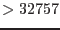

| Parameter | Mand | Type | Default | Constraints |
| General | ||||
| odf | no | string | $SAS_ODF | |
| input ODF directory name | ||||
| odfaccess | no | string | oal | oal/odf/name/all |
| how oal
should access the ODF | ||||
| schedule | no | string | S | S/U |
| exposure schedule flag, only used if
odfaccess=odf | ||||
| datamode | no | string | IMAGING | IMAGING, TIMING, BURST or ALL |
|
data modes to be processed | ||||
| exposure | no | integer | 1 | |
| exposure number to be processed,
see oal
documentation | ||||
| ccds | no | string | 1-12 | 1-12 |
| list of CCDs to be processed,
in a form like: 1,6-9,12 or 7,3,11 | ||||
| keepintermediate | no | string | none | all/raw/cal/clean/
[1]notmerged/none |
|
indicator which type of intermediate files should not be deleted,
default is to delete all intermediate files during or at the end of
the processing | ||||
| withdefaultcal | no | boolean | Y | Y/N |
| whether mode-dependent
calibration-related settings should be used automatically, this will use for:
BURST: withrdpha=``N'', withxrlcorrection=``Y'', runepreject=``Y'', runepfast=``Y'' TIMING: withrdpha=``Y'', withxrlcorrection=``Y'', runepreject=``Y'', runepfast=``N'' IMAGING: withrdpha=``N'', withxrlcorrection=``N'', runepreject as user-supplied, runepfast=``N'' | ||||
| usecanonicalnames | no | boolean | Y | Y/N |
| auto-create output filenames ? | ||||
| outset | no | string | events.fits | |
| name of output events file if
usecanonicalnames=N | ||||
| ingtiset | no | string | ||
| name of input HK GTI file [not active yet] | ||||
| optloadingimage | no | boolean | N | Y/N |
| creation of diagnostic
ADU 20-30 sky image to assess optical loading | ||||
| optloadingimageset | no | string | optloading.img | |
| name of
optical loading image | ||||
| atthkgen | ||||
| runatthkgen | no | boolean | Y | Y/N |
| atthkgen: run atthkgen? | ||||
| timestep | no | real | 1.0 | |
| atthkgen:
Duration (in sec) of `step' through
attitude quality information | ||||
| epframes | ||||
| runepframes | no | boolean | Y | Y/N |
| epframes: run epframes? | ||||
| withsrccoords | no | boolean | N | Y/N |
| whether to use user-supplied values
for RA and DEC for TIMING and BURST modes, default is N.
See the warning in epframes
(Sect. | ||||
| srcra | no | angle | 0.0 | 0 .. 360 |
|
source right ascension (J2000) | ||||
| srcdec | no | angle | 0.0 | -90 .. +90 |
|
source right ascension (J2000) | ||||
| withsrcrawy | no | boolean | N | Y/N |
| whether to use user-supplied value
for source RAWY position for TIMING and BURST modes, default is N, if both
withsrccoords=N and withsrcrawy=N then the RA_OBJ and
DEC_OBJ from the ProposalInfo are used. See the warning at
withsrccoords! | ||||
| srcposition | no | integer | 190 | 1-200 |
| epframes: source position
for TIMING and BURST mode (in RAWY pixel coordinates) | ||||
| withfinetime | no | boolean | Y | Y/N |
| whether to apply fine time correction
for TIMING and BURST modes by using source RAWY position, default is Y | ||||
| lowerthreshold | no | integer | 20 | 0-4095 |
| disregard low-energy
events (with amplitudes | ||||
| wrongpixlimit | no | integer | 10 | 0-100 |
| epframes: allowed
percentage of `wrong' events before sending a warning | ||||
| mipmethod | no | string | onboard | none,sas,com,onboard |
| epframes: method
to handle MIPs in raw events data (mainly for commissioning phase) | ||||
| qualmax | no | integer | ||
| epframes: maximum allowed
value of the quality flag to keep event in list
(mainly for commissioning phase) | ||||
| ecntempqb1 | no | real | -9999.9 | |
| epframes:
quadrant box temperature [deg C]
E_Cn_TEMPQB1 [F1576 F1676 F1776 F1876],
(temporary parameter mainly for calibration,
overwritten by existing PAH file values) | ||||
| f1294 | no | integer | 0-31 | |
| epframes:
quadrant wait states [F1294],
defines the length of the Extended Full Frame Mode frame time,
typical values are 0, 3, or 5
(temporary parameter, overwritten by existing summary file values) | ||||
| f1118 | no | string | Unknown | UNKNOWN Open Closed Thin1 Thin2 Medium Thick CalOpen CalClosed CalThin1 CalThin2 CalMedium CalThick |
| epframes: filter name
(temporary parameter, overwritten by existing summary file values) | ||||
| anchop | no | integer | 0-255 | |
| epframes:
An_CHOP [F1534 F1634 F1734 F1834]
(temporary parameter, overwritten by existing summary file values) | ||||
| automode | no | boolean | N | Y/N |
|
try to determine mode from the data itself [not implemented yet] | ||||
| autofilter | no | boolean | N | Y/N |
|
try to determine filter from the data itself [not implemented yet] | ||||
| odfok | no | boolean | Y | Y/N |
| epframes:
assume a correct/complete ODF | ||||
| hkok | no | boolean | Y | Y/N |
| epframes:
assume correct/complete HK files | ||||
| guessdeltap | no | boolean | N | Y,N |
| whether to estimate the shift of the
PN oscillator frequency due to temperature and ageing effects from HK data,
could be used to estimate SAS_JUMP_TOLERANCE (divide by 6). | ||||
| showaux | no | boolean | N | Y/N |
| epframes:
increase internally verbosity for AUX-related output | ||||
| showccx | no | boolean | N | Y/N |
| epframes:
increase internally verbosity for CCX-related output | ||||
| showpmh | no | boolean | N | Y/N |
| epframes:
increase internally verbosity for PMH-related output | ||||
| showpah | no | boolean | N | Y/N |
| epframes:
increase internally verbosity for PAH-related output | ||||
| ancmcorr | no | integer | 512 | 0-4095 |
| epframes:
An_CMCORR F1525 F1625 F1725 F1825 | ||||
| aneamipsel | no | integer | 1 | 0-63 |
| epframes:
An_EAMIPSEL F1536 F1636 F1736 F1836 | ||||
| anmaxmip | no | integer | 63 | 0-4095 |
| epframes:
An_MAXMIP F1527 F1627 F1727 F1827 | ||||
| anmip | no | integer | 3512 | 0-4095 |
| epframes:
An_MIP F1526 F1626 F1726 F1826 | ||||
| ccfok | no | boolean | Y | Y/N |
| epframes:
Is this correct/nominal ODF/SDF ? | ||||
| witheventmap | no | boolean | N | Y/N |
| epframes:
Create several event CCD maps ? | ||||
| eventmapset | no | file | ./eventmap##.dat | |
| epframes:
Name of output event CCD map file | ||||
| f1052 | no | integer | 32400 | 0-32767 |
| epframes:
DTIMAUTRSTPREVAL coarse time reset [s] | ||||
| mipdist | no | boolean | N | Y/N |
| epframes:
Create MIPDIST columns and MIPHIST extension in output ? | ||||
| mipthreshold | no | integer | 3000 | 0-4095 |
| epframes:
maximum PHA for non-MIP events [adu] | ||||
| photonmapset | no | file | ./photonmap##.dat | |
| epframes:
Name of output photon CCD map file | ||||
| setupbpx | no | string | nom6 | cal4/nom0/nom1/ nom2/nom3/nom4/ nom5/nom6/none |
|
setup for badpix/offset correction vector (used only if ccfok=N) | ||||
| showve | no | boolean | N | Y/N |
| epframes:
Display valid event intervals ? (not in use yet) | ||||
| badpixfind | ||||
| runbadpixfind | no | boolean | Y | Y/N |
| badpixfind: run badpixfind? | ||||
| badpixset | no | string | ./bpxf_##.fits | |
| badpixfind,
badpix:
path of bad pixel set, the substring ## will internally be
replaced with the CCD number currently in use (two digits) | ||||
| badpix | ||||
| runbadpix | no | boolean | Y | Y/N |
| badpix: run badpix? | ||||
| getuplnkbadpix | no | boolean | Y | Y/N |
| badpix:
get uplinked bad pixels (from CCF)? | ||||
| getotherbadpix | no | boolean | Y | Y/N |
| badpix:
get non-uplinked bad pixels (from CCF)? | ||||
| getnewbadpix | no | boolean | Y | Y/N |
| badpix:
get new pixels from task badpixfind?
Not applicable (active) for TIMING and BURST mode | ||||
| emptyextension | no | boolean | N | Y/N |
| badpix:
create an empty BADPIX extension? | ||||
| windowfilter | no | boolean | N | Y/N |
| badpix:
just get pixels within input file X/Y window? | ||||
| epreject | ||||
| runepreject | no | boolean | N | Y/N |
| epreject: run epreject? | ||||
| badcolumnset | no | string | badcolumn.tab | |
| optional bad column list (ascii) | ||||
| sigma | no | real | 4.0 | |
| sigma threshold for offset correction | ||||
| noiseparameters | no | 13 real | 0.98 12 1.0 | |
| noise fraction parameters (cutoff parameter and 12 chip specific correction factors; only for expert use) | ||||
| withoffsetlist | no | boolean | no | |
| enables use of list of offset maps to calculate energy shifts | ||||
| odilist | no | dataset | odilist.asc | |
|
Name of optional ASCII file containing pairs of | ||||
| withxrlcorrection | no | boolean | N | Y/N |
| execute X-ray loading correction code (for TI+BU modes) ? | ||||
| withsoftflarescreening | no | boolean | N | Y/N |
| execute soft flare screening code (for TI mode) ? | ||||
| softflarethreshold1 | no | real | 10.0 | |
| threshold 1 for flare screening (unit: counts/0.1 s) | ||||
| softflarethreshold2 | no | real | 1.0 | |
| threshold 2 for flare screening | ||||
| softflaresmooth | no | string | BOX | BOX GAUSS FLARE |
| smoothing method
for flare screening | ||||
| softflareenergyrange | no | 2 integer | 40 50 | |
| energy range for flare screening (ADU) | ||||
| softflaresmoothparams | no | real | 2.0 1.0 1.0 | |
| smoothing parameters | ||||
| epnoise | ||||
| runepnoise | no | boolean | N | Y/N |
| epnoise: run epnoise? | ||||
| identifynoisyframes | no | boolean | Y | Y/N |
| Identify Noisy Frames | ||||
| sigmacut | no | real | 3.0 | |
| sigma cut for bright sources | ||||
| applyfilter | no | boolean | Y | Y/N |
| Keep output of filtering process? | ||||
| savemasks | no | boolean | N | Y/N |
| Save CCDs mask to a file | ||||
| epxrlcorr | ||||
| runepxrlcorr | no | boolean | N | Y/N |
| epxrlcorr: run epxrlcorr?
This task (for IMAGING modes) requires an offsetmap to be present in the ODF, which was generally not the case in the first years (it would stop then). | ||||
| withxrlimage | no | boolean | N | Y/N |
| epxrlcorr: create a diagnostic X-ray loading image? | ||||
| epevents | ||||
| runepevents | no | boolean | Y | Y/N |
| epevents: run epevents? | ||||
| withphotonmap | no | boolean | N | Y/N |
| epevents:
whether to create diagnostic photon map file with 4 image extensions | ||||
| reemissionthresh | no | integer | ||
| epevents:
selection parameter: trigger threshold (in adu) for preceding events | ||||
| randomizeposition | no | boolean | Y | Y/N |
| epevents:
yes, if the computation of physical camera detector coordinates
is done with randomization | ||||
| randomizeenergy | no | boolean | Y | Y/N |
| epevents:
yes, if the raw amplitudes should be randomized within a
pulseheight bin | ||||
| gainctiaccuracy | no | integer | 2 | 0-2 |
| epevents:
Accuracy of gain/cti correction | ||||
| patternanalysis | no | boolean | Y | Y/N |
| epevents:
no, if pattern recognition has been done already (future development) | ||||
| withoutoftime | no | boolean | N | Y/N |
| epevents:
yes, if ``out-of-time events'' file should be created instead of
``normal events'' file (only meaningful for IMAGING modes)
(considered as experimental) | ||||
| withctisrcpos | no | boolean | N | Y/N |
| epevents:
yes, if not the RAWY coordinates but the source position SRCPOS should be
used in the energy correction routines (only meaningful for IMAGING modes)
(considered as experimental).
See Sect.3.2. | ||||
| withbackgroundgain | no | boolean | Y | Y/N |
| epevents:
yes, if background gain corrections should be applied
| ||||
| withpatternoffset | no | boolean | Y | Y/N |
| epevents:
yes, if pattern energy offset corrections should be applied
| ||||
| withctilongterm | no | boolean | Y | Y/N |
| epevents:
yes, if long-term CTI increase corrections should be applied | ||||
| ctilongtermsoft | no | boolean | Y | Y/N |
| epevents:
yes, if special soft energy function should be included in the long-term
CTI increase corrections
(considered as experimental)
| ||||
| ctilongtermy | no | boolean | Y | Y/N |
| epevents:
yes, if special Y dependence should be included in the long-term
CTI increase corrections | ||||
| withccdoffsets | no | boolean | N | Y/N |
| epevents:
yes, if CCD offset corrections should be applied
(considered as experimental)
| ||||
| withtempcorrection | no | boolean | Y | Y/N |
| epevents:
yes, if temperature-gain corrections should be applied | ||||
| withgainburst | no | boolean | Y | Y/N |
| epevents:
apply special gain if BURST mode ? | ||||
| withgaintiming | no | boolean | Y | Y/N |
| epevents:
apply special gain if TIMING mode ? | ||||
| withgainff | no | boolean | N | Y/N |
| epevents:
apply special gain if FULL FRAME mode ?
| ||||
| withgaineff | no | boolean | Y | Y/N |
| epevents:
apply special gain if EXTENDED FULL FRAME mode ?
| ||||
| withphagaincolumn | no | boolean | N | Y/N |
| epevents:
Whether to create intermediate column PHA_GAIN.
If set to ``Y" then propagatecolumns is reset to ``all". | ||||
| lowgainenergyscale | no | boolean | N | Y/N |
| epevents:
When switching on the energy correction for low-gain mode data
then most of the events will fall outside the 2-byte-limit for the
PI column (i.e. eV)
as the energy range is then about keV; if one is interested in this
full range the setting ``N" should be used and energy values be multiplied
later with 18.4 to obtain ``real" event energies. Only effective for the
few low-gain mode exposures, of course. | ||||
| checksasmip | no | boolean | N | Y/N |
|
yes, if the MIP rejection information obtained by task epframes
shall be printed (only meaningful if on-board rejection is switched off,
i.e. for SW, TI, BU modes).
| ||||
| withrdpha | no | boolean | Y | Y/N |
|
yes, if a correction for rate-dependent PHA effects for TI and BU modes
should be applied. The logical keyword PHA_RDCO indicates whether
this correction has been applied or not. If applied, then the keyword
PHA_RDCB gives the scaling factor B used in the correction,
derived from block RDPHA_DERIV in the CTI.CCF.
| ||||
| rdphatimebinsize | no | boolean | 100 | |
|
time-bin size for rate-dependent PHA correction for TI and BU modes [s]
| ||||
| withframecti | no | boolean | N | Y/N |
|
yes, if TIME-derived frame numbers should be used in CTI correction for
non-imaging modes (TI, BU) instead of the ODF frame numbers. For
FF, eFF, LW, SW modes internally always the TIME-derived frame numbers
instead of the dummy ODF numbers are used
(should not be changed).
| ||||
| testenergywidth | no | boolean | Y | Y/N |
|
yes, if use non-standard energy bin width (i.e., 1 eV instead of previously
used 5 eV binning in output PI column | ||||
| attcalc | ||||
| runattcalc | no | boolean | Y | Y/N |
| attcalc: run attcalc? | ||||
| attitudelabel | no | string | ahf | ahf/fixed/om |
| attcalc:
source of attitude data | ||||
| refpointlabel | no | string | nom | nom/obj/pnt/user |
| attcalc:
source of celestial coordinates of central reference point | ||||
| fixedra | no | real | ||
| attcalc:
S/C's attitude (RA) in the equatorial, earth-centred
reference frame (if attitudelabel=fixed) | ||||
| fixeddec | no | real | ||
| attcalc:
S/C's attitude (DEC) in the equatorial, earth-centred
reference frame (if attitudelabel=fixed) | ||||
| fixedposangle | no | real | ||
| attcalc:
S/C's attitude (PA) in the equatorial, earth-centred
reference frame (if attitudelabel=fixed) | ||||
| nominalra | no | real | ||
| attcalc: celestial
coordinate RA of central reference point (if refpointlabel=user) | ||||
| nominaldec | no | real | ||
| attcalc: celestial
coordinate DEC of central reference point (if refpointlabel=user) | ||||
| imagesize | no | real | 0.36 | |
| attcalc: half-size of final image (in degrees) | ||||
| time and exposure | ||||
| runepexposure | no | boolean | Y | Y/N |
| epexposure:
Run epexposure ? | ||||
| screenexposure | no | boolean | Y | Y/N |
| epexposure:
remove all columns in EXPOSUnn extensions that are beyond the ICD | ||||
| spatialexposure | no | boolean | Y | Y/N |
| epexposure:
yes, if spatial exposure inhomogeneities (CCD columns)
should be determined and to be taken into account by
subsequent SAS tasks (not yet implemented) | ||||
| randomizetime | no | boolean | Y | Y/N |
| epexposure:
yes, if the event arrival times should be randomized within a
readout frame | ||||
| event screening | ||||
| screen | no | boolean | Y | Y/N |
|
reject all events with rejection flags and below low-energy threshold | ||||
| runscreen | no | boolean | Y | Y/N |
|
perform the screening (otherwise use existing files) | ||||
| screenlowthresh | no | real | 150 | |
|
reject all events with lower (recombined) energies [eV] | ||||
| screenrejected | no | boolean | N | Y/N |
|
reject all events with rejection flags (apply #XMMEA_EP in screening) | ||||
| evlistcomb | ||||
| runevlistcomb | no | boolean | Y | Y/N |
| evlistcomb: run evlistcomb? | ||||
| memorymodel | no | string | high | low/highlow/high |
| memory model for task evlistcomb, all other tasks are controlled
via SAS_MEMORY_MODEL [current SAS default: high] | ||||
| withmedianpnt | no | boolean | Y | Y/N |
| evlistcomb: Get median values from
atthkgen
file (otherwise mean)? | ||||
| othertables | no | list of uppercase strings | BADPIX EXPOSURE | none |
| evlistcomb: names of secondary tables or arrays to propagate | ||||
| epnimgcolnames | no | list of uppercase strings | TIME RAWX RAWY DETX DETY X Y PHA PI FLAG PATTERN PAT_ID PAT_SEQ | none |
| evlistcomb: columns to propagate in main table (IMAGING mode) | ||||
| epnimgcoltypes | no | list of strings | double int16 int16 int16 int16 int32 int32 int16 int16 int32 int8 int16 int8 | int8/int16/int32/single/
[1]double/boolean/string |
| evlistcomb: output type of IMAGING mode columns | ||||
| epntimcolnames | no | list of uppercase strings | TIME RAWX RAWY DETX DETY X Y PHA PI FLAG PATTERN PAT_ID PAT_SEQ | none |
| evlistcomb: columns to propagate in main table (TIMING mode) | ||||
| epntimcoltypes | no | list of strings | double int16 int16 int16 int16 int32 int32 int16 int16 int32 int8 int16 int8 | int8/int16/int32/single/
[1]double/boolean/string |
| evlistcomb: output type of TIMING mode columns | ||||
| propagatecolumns | no | string | auto | auto/imaging/subset/
[1]icd/all |
|
how many columns should be propagated to the final event file
for TIMING and BURST modes: ``auto'' means values via
epntimcoltypes and epntimcolnames, ``imaging'' uses
the values as for epnimgcolnames and epnimgcoltypes,
``subset'' similar to ``imaging'' but without X, Y,
and PAT_SEQ, whereas ``icd'' uses only the columns
that are explicitly mentioned in the Data Products ICD, and ``all''
uses all output columns of epevents
for IMAGING and TIMING
modes | ||||
| final GTI screening | ||||
| runevselect | no | boolean | Y | Y/N |
| evselect: run evselect? | ||||
| RDCTI correction | ||||
| runepfast | no | boolean | N | Y/N |
|
run epfast
for rate-dependent CTI (RDCTI) corrections in TI+BU modes?
Ignored if withrdpha=``Y'' or if IMAGING mode. | ||||
| pattern distribution | ||||
| withpatplot | no | boolean | N | Y/N |
|
run epatplot
to create pattern plot and FLAG=0 masks | ||||
| background lightcurve | ||||
| runbackground | no | boolean | Y | Y/N |
| create background lightcurve? | ||||
| withmask | no | boolean | Y | Y/N |
| use masks for lightcurve? | ||||
| maskset | no | string | ./mask_##.fits | |
|
path of point source mask set, the substring ## will internally be
replaced with the CCD number currently in use (two digits).
Energy range: 0.2-10.0 keV.
Not applicable (active) for SMALL_WINDOW, TIMING, and BURST mode | ||||
| withhardmask | no | boolean | Y | Y/N |
|
use hard energy band for maskset instead of soft ? | ||||
| hrdmskset | no | string | ./hrdmask_##.fits | |
|
same as above but for energy range 7.0-15.0 keV | ||||
| rateset | no | string | rate_bkg.fits | |
| name of background lightcurve file | ||||
| specset | no | string | spec_bkg.fits | |
| name of background spectrum file | ||||
| timebinsize | no | real | 0.0 | |
| time bin for background lightcurve [s],
if set to 0 then the task chooses default values according to the
instrument mode and energy range: withhardmask=Y 100[s]
for FF eFF modes, 200 for LW, 350 for SW, and 100 for TI BU modes,
withhardmask=N 10[s]
for FF eFF modes, 20 for LW, 350 for SW, and 10[s] for TI BU modes | ||||
| Parameter | Mand | Type | Default | Constraints |